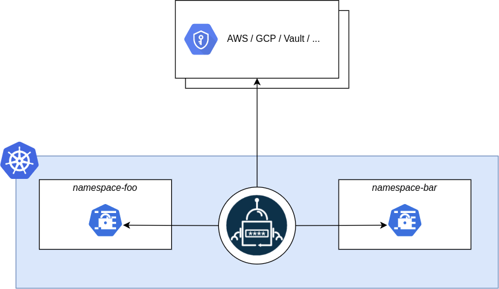
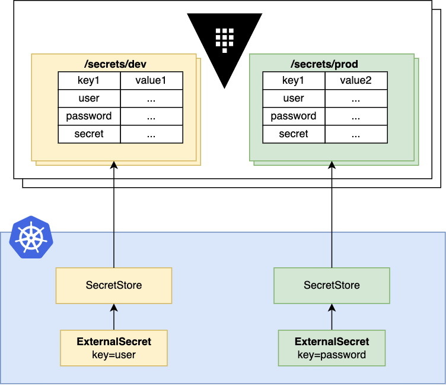

Outline
- Why OpenBao and External Secrets Operator?
- Journey of a secret (Dataflow diagrams)
- Proof of Concept and Docs
- Discussion and Dilemas
Why OpenBao?
Advantages of using OpenBao include:
- Centralized Management: Store all secrets in one secure place, reducing the risk of exposure.
- Dynamic Secrets: Applications can retrieve secrets dynamically, staying always up-to-date.
- Access Control: Fine-grained access policies can be enforced, allowing only authorized services to access specific secrets.
- Can be setup in VMs externally from the cluster for increased resilience.
Why External Secrets Operator?
We need a way to synchronize OpenBao secrets into Kubernetes namespaces.
Both projects are affiliated with linux foundation making them a robust choice.
An alternative solution has already been setup: Sealed Secrets
Journey of a secret (1/2)

Journey of a secret (2/2)

Proof of Concept and Docs
For the proof of concept a separate Single Node Infranode (SNI) Openshift cluster was created and the helm charts of OpenBao and External Secrets Operator were installed.
For a detailed technical documetation see: Vaulted Secrets
Let's check how this looks in action.
Discussion and Dilemas
- Would we like to adopt this approach and invest in it?
- Luckily External Secrets Operator is simple and straight forward to setup (no extra configuration was required).
- Implementation: How can we host/maintain/manage OpenBao or multiple OpenBaos? For what audience?
You are welcome to share your thoughts.
Thank you!
Every app has its secrets \o/